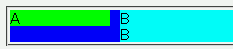
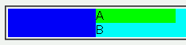

絶対配置された要素が、後続する別の要素のマージンを引き継いでしまう。
<div style="position:relative; background:blue;"> <div style="position:absolute; width:100px; background:lime;">A</div> <div style="margin-left:110px; background:aqua;">B<br>B</div> </div>
2段組みのサンプルです。Bのdiv要素に設定されている左マージンは、Aのdiv要素に重なるのを防ぐために設定されています。
Moz1.0での表示（標準モード）
WinIE6.0での表示（標準モード）
このバグを回避するには、マージンを引き継いでしまう要素で左からの位置（leftプロパティ）を定義し、さらに親要素で幅（widthプロパティ）を定義してください。
<div style="position:relative; background:blue; width:100%;"> <div style="position:absolute; width:100px; left:0; background:lime;">A</div> <div style="margin-left:110px; background:aqua;">B<br>B</div> </div>
または、親要素にボーダーかパディングを設定してください。
<div style="position:relative; background:blue; padding:1px;"> <div style="position:absolute; width:100px; background:lime;">A</div> <div style="margin-left:110px; background:aqua;">B<br>B</div> </div>
WinIE6.0では標準・互換モードともに不具合の発生が確認されました。